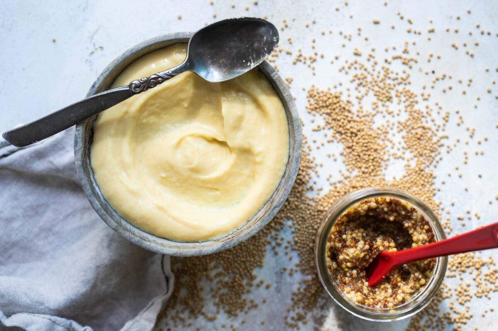

Homemade Yellow Mustard Recipe

Description:
Master how to make mustard in just 15 minutes! To use in salad dressings, marinades, or as a sandwich spread, my homemade yellow mustard and homemade whole grain mustard recipes are so simple and affordable to DIY.
Ingredients
- 3 tablespoons dry mustard (1 ounce)
- 1 1/2 teaspoons granulated sugar
- 1/2 teaspoon salt
- 3 eggs
- 4 ounces malt vinegar
- dash Tabasco sauce
- 2 tablespoons honey
Steps
- In a medium bowl, whisk together mustard, sugar, and salt. Add eggs and whisk until smooth. Whisk in vinegar, Tabasco, and honey and beat until combined. Cover and refrigerate for 1 to 2 hours.
- Make a double broiler by setting a glass or metal bowl over a pot of gently simmering water (do not let the water touch the bowl). In the double boiler over medium-high heat, beat mixture until thick and creamy.
- Cover and return to the refrigerator until cold. Transfer to an airtight container, and store for up to 2 weeks.